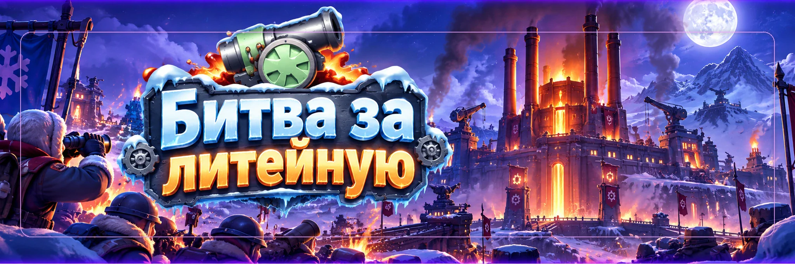

Литейная
Автор: SOVA58
Литейная — командное PvP-событие, где два альянса сражаются за контроль карты и набирают альянсовые очки арсенала. Победу определяют не убийства сами по себе, а то, насколько хорошо команда захватывает здания, удерживает их, собирает выпавшие припасы и быстро переключается между целями.
Карта Литейной
Это фото удобно использовать как быструю шпаргалку: сначала по нему проще запомнить, где находятся главные здания, а потом уже разбирать, что захватывать в начале и кто куда должен идти.
- Центр карты — самая важная зона, потому что там находится Королевская литейная.
- Боковые здания тоже важны: они дают очки, бонусы и помогают удерживать инициативу.
- Перед боем полезно заранее распределить, кто идёт на центр, а кто — на вспомогательные объекты.
Как определяется победитель
Побеждает альянс, который к окончанию боя набрал больше альянсовых очков арсенала.
Личные очки игрока нужны для личного рейтинга и наград, но сами по себе не выигрывают бой. Можно набить много личных очков в сражениях и всё равно проиграть Литейную, если противник лучше контролировал здания и собирал очки карты.
Главные источники альянсовых очков:
- первый захват здания;
- длительное удержание зданий;
- временные очки, которые производят удерживаемые объекты;
- сбор выпавших припасов арсенала;
- Оружейные мастерские, которые появляются позднее.
Перед входом на поле боя
До входа в Литейную подготовьте город. Если у вас идут походы, стоят подкрепления или есть другие ограничения входа, игра может не пустить на поле боя.
- верните ненужные походы;
- освободите очереди марша;
- проверьте раненых;
- уберите чужие подкрепления из города, если интерфейс требует этого для входа;
- заранее посмотрите, в какой легион и роль вас поставило руководство.
На поле боя войска не погибают безвозвратно как в обычном PvP: потери переводятся в раненых, а после завершения боя войска восстанавливаются по правилам события.
Главное правило Литейной — контроль карты
Литейная не выигрывается одной большой дракой в центре. Если вся команда стоит около одного здания, противник спокойно забирает остальные точки и продолжает получать очки.
Перед стартом R4/R5 лучше распределить игроков по ролям:
- ударная группа — сильные рейды и выбивание ключевых зданий;
- защитники — удержание уже захваченных объектов;
- мобильная группа — телепорты, сбор припасов и быстрые перехваты;
- поддержка — подкрепления и помощь там, где противник давит сильнее всего.
Как работают очки зданий
После полного захвата здание начинает приносить очки арсенала вашему альянсу.
Пока вы его удерживаете, часть очков становится уже защищённой частью общего счёта. Когда здание долго находится под контролем и достигает своего лимита накопления, дальнейшая выработка делится: часть уходит прямо в общий счёт, а часть накапливается над зданием как временные очки арсенала.
Временные очки и припасы арсенала
Это одна из самых важных механик события.
Если противник выбивает владельца здания, накопленные над ним временные очки не исчезают бесследно. Они рассыпаются вокруг объекта в виде припасов арсенала.
Подобрать их может любая из двух сторон.
Если у объекта накопилось много временных очков, заранее держите рядом свободные быстрые походы. После успешного штурма нужно сразу собрать выпавшие припасы, иначе противник может забрать значительную часть очков обратно.
Здания Литейной
Королевская литейная
Центральный и самый ценный постоянный источник очков. Открывается не в самом начале боя.
Если альянс способен её удерживать, центр становится ключевой целью. Но отправлять туда абсолютно всех опасно: потеря боковых объектов может перекрыть выгоду от центра.
Прототипные объекты I и II
Одни из самых ценных точек ранней стадии. Они дают высокий поток очков и поэтому обычно входят в первые приоритеты команды.
К моменту их открытия полезно уже иметь рядом назначенных игроков, чтобы не проигрывать первый захват из-за опоздания.
Ремонтные комплексы I–IV
Дают стабильный поток очков и позволяют распределить команду по карте.
Их часто выгодно удерживать менее сильными группами, пока основные ударные игроки сражаются за более дорогие объекты.
Котельная
Уменьшает время, необходимое вашей стороне для захвата зданий.
Особенно ценна в начале и при частых перехватах объектов: чем быстрее проходит захват, тем меньше времени у противника на ответ.
Центральная транзитная станция
Ускоряет восстановление телепорта и делает всю команду мобильнее.
Контроль станции помогает быстрее менять фланг, приходить на защиту, окружать важное здание перед штурмом и собирать выпавшие припасы.
Склад вооружения
Даёт боевое преимущество вашей стороне. Это особенно заметно, когда силы альянсов близки и каждая прибавка важна при штурме центра или сильного гарнизона.
Точные значения бонусов для сайта 58 государства не фиксируем без проверки текущего русского интерфейса.
Лагерь наёмников
Позволяет использовать отряды наёмников против объектов, которые удерживает противник.
Это инструмент давления: им можно усложнить защиту важного здания и подготовить его к атаке основной группы.
Оружейные мастерские
Появляются позже прямо на карте и дают дополнительный источник очков.
За ними особенно важно следить мобильным игрокам. В концовке боя серия быстро собранных мастерских может заметно сократить разницу в счёте или закрепить преимущество.
Фазы боя
Не все объекты доступны одновременно.
- Начало: борьба за Прототипные объекты, Ремонтные комплексы, Котельную и Транзитную станцию.
- Середина: открываются Королевская литейная, Склад вооружения и Лагерь наёмников, поэтому приоритеты команды меняются.
- Поздняя стадия: появляются Оружейные мастерские, и мобильные походы становятся особенно ценны.
Не продолжайте автоматически защищать старый приоритет, если на карте уже открылась более выгодная цель.
Когда нужен рейд
Сильный заполненный гарнизон обычно выгоднее выбивать организованным рейдом, а не серией несогласованных одиночных атак.
Перед штурмом R4/R5 определяют:
- кто открывает рейд;
- кто входит в него;
- какие герои используются;
- какие игроки остаются рядом для сбора припасов после победы.
Для государства 58 не закрепляем на странице один универсальный список героев или процент войск. Используем доступное поколение и реальные боевые отчёты.
Не бросайте здание сразу после захвата
Первый захват приносит разовый бонус, но основная ценность объекта — в последующем производстве очков.
После захвата оставьте достаточно сильный гарнизон и заранее решите, кто будет его подкреплять.
Однако не превращайте каждую точку в крепость любой ценой. Иногда выгоднее отдать дешёвый объект и всей мобильной группой забрать более ценную цель или большой объём временных очков противника.
Сбор припасов после захвата
Когда у противника выбивают долго удерживаемый объект, рядом могут появиться припасы арсенала.
- не отправляйте все походы внутрь здания;
- оставляйте несколько свободных маршей рядом;
- после победы сразу смотрите вокруг объекта;
- собирайте крупные припасы раньше противника.
На равном поле боя именно эта механика часто решает, кому на самом деле достанутся очки после успешного штурма.
Телепорты и перемещение
Не стойте весь матч в одной точке только потому, что удачно телепортировались в начале.
Перемещайтесь вслед за приоритетами:
- защита дорогого здания;
- подготовка рейда;
- сбор временных очков;
- появление Оружейных мастерских;
- ослабленный фланг противника.
Транзитная станция делает такую игру ещё эффективнее.
Личные очки
Личный рейтинг существует отдельно от альянсового счёта.
Бои с противником могут давать личные очки, поэтому активный PvP полезен для личных наград. Но если игрок ради убийств бросает важное здание или игнорирует припасы, альянс может потерять больше очков, чем этот игрок заработает лично.
сначала победа альянса и цели на карте, потом личный рейтинг.
Что делать участнику
- Заранее узнать свою группу и стартовую точку.
- Войти вовремя с подготовленными походами.
- Идти на назначенное здание, а не туда, где просто идёт самая большая драка.
- После захвата оставить защиту или подкрепление по команде.
- Следить за временными очками над вражескими зданиями.
- После успешного штурма собирать выпавшие припасы.
- Использовать телепорты для смены фланга.
- Следить за появлением Оружейных мастерских.
- При смене фазы сразу смотреть новые команды R4/R5.
Что делать R4/R5
- Разделить игроков по группам до старта.
- Назначить лидеров рейдов.
- Распределить ранние здания, чтобы все не полетели в одну точку.
- Следить не только за занятыми объектами, но и за накопленными временными очками.
- Перед штурмом дорогого здания оставить мобильных игроков для сбора припасов.
- Менять приоритеты при открытии новых фаз.
- Не тратить сильнейших игроков на дешёвую точку, если центр или Прототип под угрозой.
Частые ошибки
- Считать, что победитель определяется количеством убийств.
- Всем альянсом ехать на одно здание.
- Захватить объект и полностью его бросить.
- Игнорировать временные очки над зданиями.
- Выбить противника и не собрать выпавшие припасы.
- Отправить все походы в гарнизон и не оставить никого мобильным.
- Продолжать атаковать слишком сильную точку, когда на карте есть более выгодные цели.
- Игнорировать Котельную и Транзитную станцию.
- Не перестраивать тактику после открытия центра и поздних объектов.
- Пропустить Оружейные мастерские в концовке.
- Гнаться за личными очками в ущерб альянсовому счёту.
Побеждает альянс с большим количеством альянсовых очков арсенала.
Захватываем и удерживаем здания.
Следим за временными очками над объектами.
После выбивания противника сразу собираем припасы арсенала.
Используем мобильность и телепорты.
Не пропускаем поздние Оружейные мастерские.
Личные очки важны для личных наград, но не заменяют альянсовый счёт.
Главный принцип: Литейная выигрывается не количеством драк, а тем, кто лучше превращает контроль карты в очки.